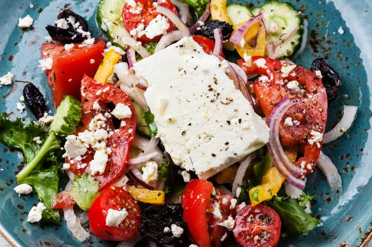

Грецький салат
Гарний, соковитий та ароматний грецький салат, мабуть, найпопулярніший із усіх овочевих салатів.
_____________________
Чорні оливки — 12 шт.
Огірки — 2 шт.
Помідори — 2 шт.
Солодкий перець — 1 шт.
Оливкова олія — 2 ст.л.
Сир фета — 150 г
Сіль, перець — за смаком
Петрушка, орегано, базилік — за смаком